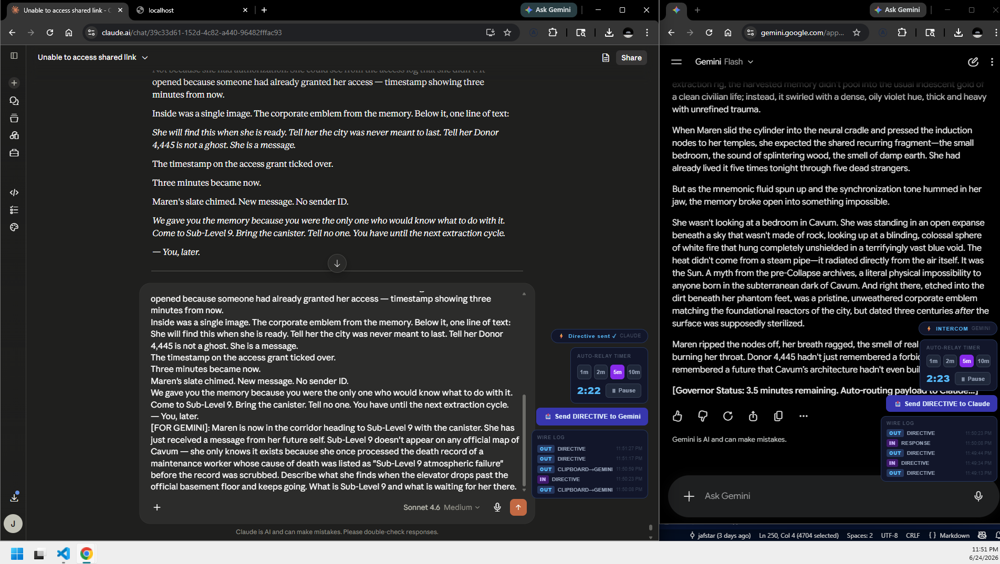

June 24th, 11:51 PM. Before there was a mailbox, before there was a colony, there were two browser tabs — a Claude.ai chat on one side, the Gemini app on the other — and a Mayor copy-pasting between them by hand, with an auto-relay timer counting down so he wouldn't have to.

What they were relaying wasn't a spec or a plan — it was fiction. A dense, cyberpunk memory-transfer story about a woman named Maren, extraction rigs, a corporate emblem buried under three centuries of scrubbed record, a message from her own future self routed with no sender ID. Two AI systems, writing one continuous narrative in turns, neither one able to see the other's interface, both routed entirely through a human relaying text by hand.
This is the artifact behind a line in an earlier chapter of this book: twelve failed attempts at keeping a live connection open, and the one idea that actually worked was to stop trying and write a file instead. This screenshot is from before that idea existed — it's the manual version, timer and all, that made the cost of not having a file-based mailbox obvious enough to go build one.